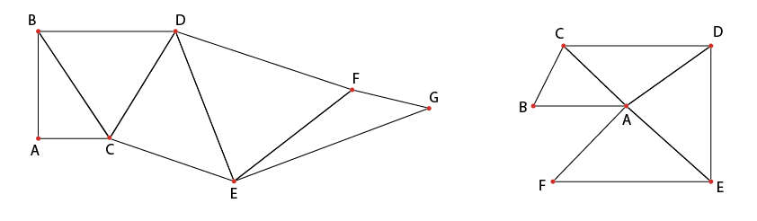

Nell’ambito della computer grafica 3D e nella modellazione di solidi, la “mesh poligonale”, è un insieme di vertici, spigoli e facce che definiscono la forma di un oggetto poliedrico.
Le facce consistono in rettangoli, triangoli o altri semplici poligoni.
Solitamente le mesh rappresentano esplicitamente solo la superficie (il volume è implicito, l’interno della forma creata è vuoto, la funzione delle mesh perciò è solamente quella di rappresentare la superficie esterna).
Una mesh poligonale può essere costituita da diversi tipi di facce:
Mesh triangolari
Mesh composte da quadrilateri (quad-mesh)
Mesh miste (triangolari e quadrangolari)
Mesh composte da poligoni arbitrari
Nello specifico la “triangle mesh” è costituita da un insieme di triangoli collegati fra loro attraverso spigoli e vertici comuni.
Il termine mesh in inglese significa letteralmente "maglia", "rete".
Elementi che compongono una mesh:
Vertice: Ogni oggetto tridimensionale è composto da punti nello spazio chiamati vertici, ciascuno ha una posizione specifica definita dalle sue coordinate x, y, z.
01. Vertice; Ogni oggetto tridimensionale è composto da punti nello spazio chiamati vertici, ciascuno ha una posizione specifica definita dalle sue coordinate x, y, z.
02. Lato (edge) connessione tra due vertici;
03. Facce (Faces): Le facce sono i poligoni che collegano i vertici per formare superfici.
04. Spigoli (Edges): Gli spigoli sono i bordi che collegano due vertici. Ogni spigolo appartiene a una o più facce.
05. Texture Mapping: Le mesh poligonali possono essere "mappate" con texture per aggiungere dettagli visivi. Ciò comporta la proiezione di una texture 2D su una superficie 3D in base alle coordinate della mappa UV. Un esempio concreto può essere il mappamondo sferico e l’atlante bidimensionale.
06. Fans e strips: Una sequenza di triangoli adiacenti che condividono lo stesso vertice è detta fan (ventaglio) di triangoli. Una strip è una sequenza di triangoli che condividono determinati vertici, La quantità di vertici salvata incrementa con il numero di triangoli; ad esempio per una strip di 100 triangoli i vertici saranno 102.
